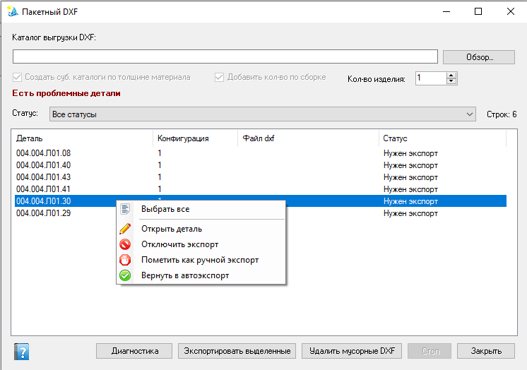

Пакетная диагностика DXF
Диагностика и пакетный экспорт DXF по позициям активной сборки (или по отфильтрованному списку реестра изделия). В пакет попадают конфигурации детали со свойством «Нужен dxf = Да», в том числе конфигурация заготовки, которой нет в составе сборки.
Как открыть
- Лента Velum → DXF пакет — нужна открытая сборка и уровень
admin. - Из реестра изделия — кнопка Экспорт DXF в хабе (по текущему списку). Значение поля Кол-во изделия копируется из реестра.
Источник позиций — состав сборки / реестр изделия, а не произвольная папка на диске.
Различайте два каталога: «Путь dxf» в свойствах детали — канонический (базовый) DXF;
поле «Каталог выгрузки DXF» на форме — каталог выдачи (копии для производства). При открытии формы каталог выдачи пустой и из настроек не подставляется.
Элементы окна
- Каталог выгрузки DXF — каталог выдачи (копии DXF); кнопка «Обзор…». При пустом поле флажки субпапок и кол-ва заблокированы.
- Создать суб. каталоги по толщине материала — раскладывать копии по подпапкам толщины (по умолчанию включено). Доступен только когда указан каталог выгрузки.
- Добавить кол-во по сборке — добавить суффикс « - N шт» к имени копии в каталоге выдачи (виден при запуске со сборки / из реестра). Доступен только когда указан каталог выгрузки.
- Кол-во изделия — целое число ≥ 1 (по умолчанию 1). При включённом «Добавить кол-во по сборке» в имя файла идёт глобальное кол-во компонента в сборке × это значение.
- Поля суффиксов и шаблона имени убраны: пакетная выгрузка использует имя файла из свойства «Имя файла dxf» детали.
- Список: Деталь, Конфигурация, Файл dxf, Статус.
- Кнопки: Диагностика, Экспортировать выделенные, Удалить мусорные DXF, Стоп, Закрыть.

Окно «Пакетный DXF»: каталог выгрузки, опции выдачи (субпапки, кол-во, кол-во изделия), суффиксы имени, preview и список позиций со статусом.
Каталог выгрузки и базовые DXF
- Пока поле каталога пустое, флажки «Создать суб. каталоги…» и «Добавить кол-во…» недоступны. После выбора пути через «Обзор…» (или ввода существующего пути) флажки разблокируются.
- Если при экспорте каталог выгрузки не указан, появляется запрос: «Не указан каталог выгрузки DXF, будут обновлены только базовые файлы DXF. Продолжить?»
- Да — обновляются только канонические (базовые) DXF по «Путь dxf»; копии в каталог выдачи не создаются.
- Нет — операция не выполняется.
- Если путь указан, но каталога на диске нет — экспорт блокируется с предупреждением.
Порядок работы
- Откройте сборку (или реестр изделия с нужным фильтром и при необходимости заданным «Кол-во изделия»).
- При необходимости укажите каталог выгрузки (выдачи), «Кол-во изделия», субпапки по толщине и флажок кол-ва в имени.
- Диагностика — заполняет список статусов (нужен экспорт, устарел, нет/устарел файл с кол-вом, мусорный, ошибка пути и т.п.). При указанном каталоге выдачи проверяются и файлы « - N шт».
- Выделите строки → Экспортировать выделенные. Без каталога выдачи подтвердите обновление только базовых DXF. При необходимости удалите мусорные DXF.
- Стоп прерывает длительную операцию.
Свойства документа
| Свойство | Роль |
|---|---|
| Нужен dxf | Включает конфигурацию в пакет. Сначала вкладка конфигурации; если свойства нет — общая вкладка. Если на обеих есть значение, действует вкладка конфигурации. Для спецзаготовки: No на конфигурациях изделия, Yes на заготовке. |
| Путь dxf | Канонический каталог базового DXF. Каталог выдачи на форме задаётся отдельно и при открытии не подставляется автоматически. |
Типичные статусы
- Нужен экспорт / устарел — файла нет или геометрия/отпечаток изменились.
- Нет / устарел файл с кол-вом — канонический DXF актуален, а копии « - N шт» в каталоге выдачи нет или она старше базы (N с учётом «Кол-во изделия»).
- Мусорный DXF — файл есть при «Нужен dxf = Нет» или не соответствует ожидаемому артефакту.
- Каталог из «Путь dxf» недоступен — проверьте сетевой/локальный путь.
- Ошибка загрузки детали в сборке — компонент не разрешён в сессии SOLIDWORKS.
См. также
- Реестр изделия (поле «Кол-во изделия» и хаб экспорта)
- Экспорт DXF (одиночный диалог)
- Пакетный PDF
- Лента команд (контекст и admin)